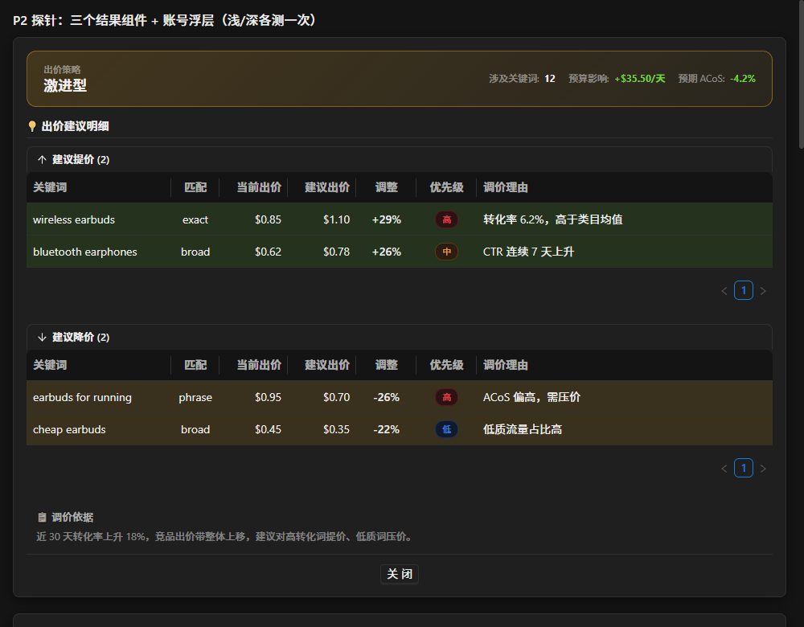
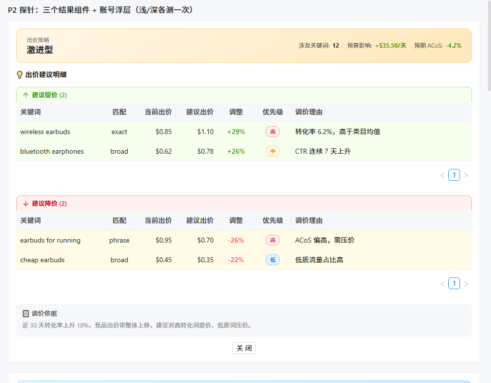
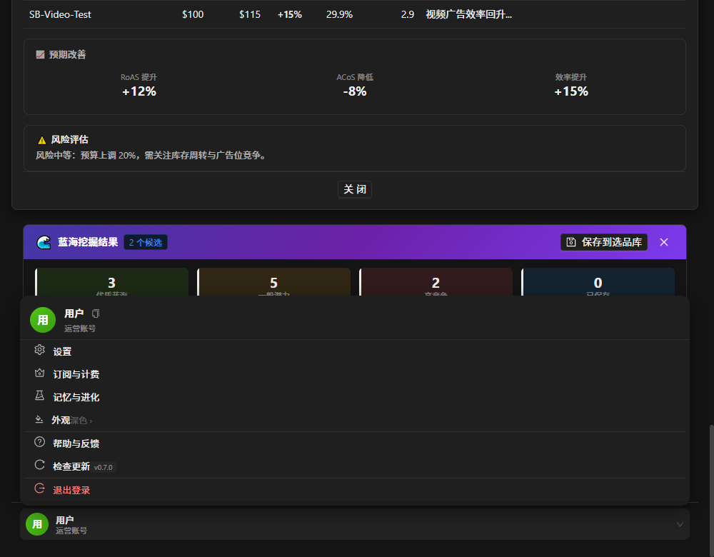
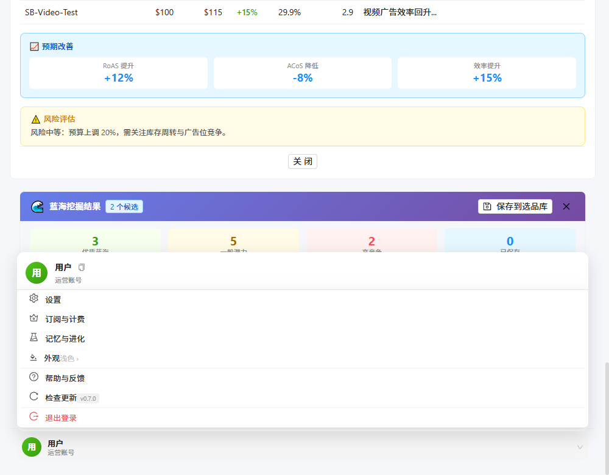
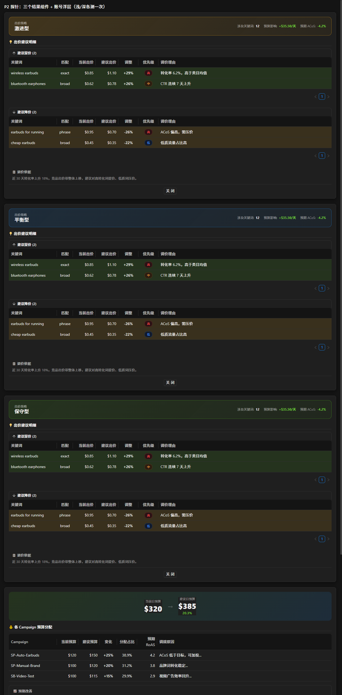
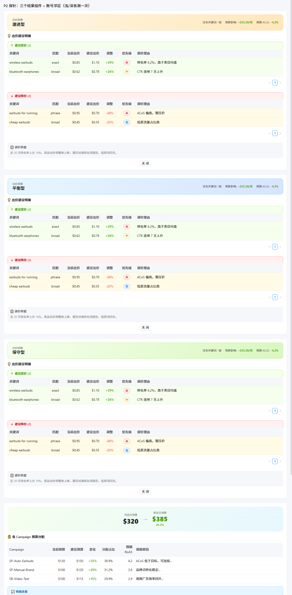

borderRadius / fontSize / controlHeight；P2 把 167 行 dark-overrides.css 整体删除，
深色意图全部搬进 token。两阶段都**不依赖浏览器**做了等价性证明，并用 computed-style A/B 快照逐项核对了
65 处补丁删除后的真实渲染差异 —— 差异全部可归类，**未发现回归**。
:root 定义一次，不进 html.dark）命名规则：后缀数字 = 像素值，便于脚本按字面量批量收敛。小数用 - 代替 .。
| 分组 | 个数 | 变量与取值 |
|---|---|---|
圆角 --radius-* | 12 | 2 3 4 6 8 10 12 14 16 20 px，另 --radius-pill: 999px、--radius-circle: 50% |
间距 --space-* | 14 | 1 2 3 4 5 6 8 10 12 14 16 18 20 24 px |
字号 --font-size-* | 21 | 9 10 10.5 11 11.5 12 12.5 13 13.5 14 15 16 17 18 20 22 24 26 28 32 36 px |
控件高度 --control-height* | 3 | --control-height-sm: 24px / --control-height: 32px / --control-height-lg: 40px |
另顺带补齐字体栈 --font-sans / --font-mono（后者让 BlueOceanProductCard.vue 里的 var(--font-mono, monospace) 终于取到值）。
stores/theme.ts 新增 DIMENSIONS）antd token 是纯数字、CSS 变量带 px，两边各写一份；取值 = antd 默认值，显式声明不改变渲染结果，目的是把「换圆角 / 换密度」的入口收敛到一处。
| antd token | 值 | 对应 CSS 变量 |
|---|---|---|
borderRadius / XS / SM / LG | 6 / 2 / 4 / 8 | --radius-6 / -2 / -4 / -8 |
fontSize / SM / LG / XL | 14 / 12 / 16 / 20 | --font-size-14 / -12 / -16 / -20 |
controlHeight / SM / LG | 32 / 24 / 40 | --control-height / -sm / -lg |
--radius-* + DIMENSIONS.borderRadius* 两组值；--space-* + DIMENSIONS.controlHeight*，字号同步改 --font-size-*；:root / html.dark 双份 token。| 变量族 | 引用总数 | 主要落点（按 CSS 属性） |
|---|---|---|
var(--font-size-*) | 946 | font-size 946 |
var(--space-*) | 2056 | padding 514 · gap 505 · margin-bottom 270 · margin-top 200 ·
margin 148 · height 90 · padding-top 57 · margin-left 43 ·
padding-left 40 · margin-right 22 · padding-bottom 16 · min-height 9 |
var(--radius-*) | 435 | border-radius 432 |
var(--control-height-*) | 0 | 预留：当前控件高度由 antd token 驱动，自建控件后续按需接入 |
| 验证手段 | 做法 | 结果 |
|---|---|---|
| 构造性等价证明 | 把改后文件里所有 var(--radius/space/font-size-*) 按 :root 声明值还原成字面量，
与备份原文逐字节比对 —— 完全相等即证明「纯重命名、渲染零变化」，不依赖浏览器 |
102 文件 / 3437 处全部等价 |
| 幂等复检 | 脚本 --apply 后再干跑一次，应报「0 处可替换」= 覆盖完整 |
0 |
| 构建终验 | npm run build（脚本本身 = vue-tsc && vite build，故类型检查同时通过） |
✓ built in 14.55s，EXIT=0 |
| 对象 | 规模 | 处理 |
|---|---|---|
src/styles/dark-overrides.css | 167 行 / 65 处 html.dark 规则 / 92 条声明 |
整文件删除 + 摘掉 main.ts 的 import |
Sidebar/AccountMenu.vue | 7 处 html.dark |
5 条与 --bg-hover-light 同值 → 判为冗余直接删；2 条改走新 token |
views/MemoryEvolution.vue | 1 处 | 死规则（:deep() 穿透问题，从未生效）→ 删 |
html.dark 的样式规则只剩 App.vue 一处
（125 处，均为 .workspace-container / [class*="-result"] 这类业务类名补丁层，本次未动）。
其余出现全为注释：stores/theme.ts 9 处（JSDoc 与 classList.toggle('dark') 说明）、
CompetitorIntelEvidence.vue 1 处。
| token | 浅色 | 深色 | 原来出现在 |
|---|---|---|---|
--primary-strong | #0958d9 | #3d9be6 | 提级文字 |
--warning-strong | #d48806 | #ffc53d | 风险-中标题 |
--danger-strong | #cf1322 | #ff7875 | 风险-高 / 降价 header |
--danger-border-strong | #ffa39e | rgba(255,77,79,.45) | 降价 header 边框 |
--orange-bg / --orange-bg-2 / --orange-border |
#fff7e6 / #ffe7ba / #ffd591 | rgba(250,173,20,.16 / .05 / .4) | 激进策略卡 |
--info-bg-2 / --success-bg-2 |
#d6e4ff / #d9f7be | rgba(24,144,255,.05) / rgba(82,196,26,.05) | 渐变第二档 |
--bg-raised | #ffffff | #262626 | 结果卡 / 账号浮层底色 |
--shadow-overlay | 0 8px 28px rgba(0,0,0,.14) | 0 8px 28px rgba(0,0,0,.5) | 账号浮层投影 |
--shadow-card | none | 0 4px 16px rgba(0,0,0,.5) | 结果卡投影（浅色刻意无） |
--danger-hover-bg | rgba(255,77,79,.08) | rgba(255,77,79,.18) | 退出登录 hover |
--bo-header-bg / --bo-header-shadow |
蓝紫渐变 #667eea→#764ba2 / none | 深紫三段渐变 / rgba(124,58,237,.25) | 蓝海结果卡头 |
--stat-bar-opacity | 0（浅色不显示色条） | 1（深色显示） | 统计卡左侧 3px 色条 |
--surface-ring | none | inset 0 0 0 1px rgba(255,255,255,.04) | 统计卡内描边 |
方法：探针页渲染 3 个结果组件（含 3 种策略）+ 蓝海统计卡 + 账号浮层 → 换回旧版文件取快照 → 换回新版取快照 →
逐属性 diff getComputedStyle。为排除「未声明边框时 borderColor = currentColor」的测量陷阱，
属性表包含 borderTop/Bottom。
| 差异分类 | 项数 | 说明 |
|---|---|---|
| 伪差异浅色 14 / 深色 1 | 15 | ① stat-*::before 色条 浅色 opacity 1→0：两侧都不可见（浅色下本就不显示色条）；
② #p2-bid td 的 borderBottomColor rgba(255,255,255,.06) → 透明：
两侧 border-bottom-style 均为 none，颜色不参与绘制 → 无视觉影响 |
| 修复 | 9 | 旧补丁给深色多加了浅色没有的 1px 边框：.rationale-box / .budget-overview /
.imp-item。实测浅色下三者 borderTopStyle 恒为 none → 删除是
深色与浅色结构对齐，非回归 |
| 改善·调色板对齐 | 13 | 蓝海统计卡从 Tailwind 色 → 项目调色板：#22c55e→--success、#eab308→--warning、
#ef4444→--danger、#3b82f6→--primary；.stat-* 底色同步 |
| 改善·行底色生效 | 2 | 补丁里 html.dark .bid-optimize-result .ant-table-tbody td { background: transparent !important }
特异性高于 .row-increase > td，把涨/跌行底色压掉了；删除后组件自身的
:deep(.row-increase)>td{background-color:var(--success-bg)} 终于生效 |
| 档位统一 | 8 | 补丁里手写的偏亮值 → 项目语义档：.risk-box p .75→--text-secondary(.65)、
.arrow .4→--text-disabled(.25)、.stat-* td .85→--text-primary(.92)；
antd 表头 rgba(255,255,255,.04)→rgb(20,20,20)、.7→.65 |
.strategy-label 0.55 → --text-tertiary 0.45、
.arrow 0.4 → 0.25）。这是「补丁硬编码了比项目语义档更亮的值」的必然结果 —— 属统一，但确实看得出。
若不想要，两条路：① 只把这几个类恢复成显式值；② 抬高 html.dark 里 --text-tertiary / --text-disabled，
但会影响全站。默认按 ① 不动，等老板定。
深色补丁里还有 13 个选择器未被探针渲染（.strategy-name / .section-title / .budget-card /
.risk-low|medium|high / .overview-stats / .result-footer / .imp-label|value 等）。
逐个核对组件当前 CSS 后确认：全部已走 token（--text-primary|secondary|tertiary / --*-bg /
--*-border / --primary / --success），深色自动取到正确值。
个别值与补丁的精确对比：.risk-low h4 #73d13d = --success 深色值 完全一致；
.risk-medium h4 #ffc53d = --warning-strong、.risk-high h4 #ff7875 = --danger-strong
也都精确命中。结论：补丁规则多为冗余，删除安全。

.rationale-box 已无多余边框

--stat-bar-opacity:1）、浮层 --bg-raised + --shadow-overlay 正常
--stat-bar-opacity:0），符合设计

| 级别 | 事项 |
|---|---|
| P0 | themePresets 预设表 —— 老板本轮已跳过，未做 |
| P1 | ④ 层刻度外的尺寸残留 142 处（7px/9px/30px/40px 等不在刻度里）；
script/template 区另有约 57 处尺寸字面量（需单独一轮，风险比 style 块高） |
| P1 | App.vue 里 125 处 html.dark 业务类名补丁层（.workspace-container /
[class*="-result"] 等）—— 本次未动，是「加新主题仍要复制」的最后一块 |
| P1 | 环境色仍有散落（#cf1322 17 / #ffd591 15 / #fff7e6 14 / #0958d9 13 /
#d46b08 13 / #ffa39e 12 / #d48806 11）—— 多数可直接换成本轮新建的 --*-strong / --orange-* |
| P2 | --control-height* 已定义但引用数 0（当前控件高度由 antd token 驱动）—— 属预留，也可清理 |
| P2 | colorSemantics.ts 仅被 4 个组件引用，散落 color="blue|green|red|orange|gold" 预设名约 54 处 |
refs/checkpoints/before-dim-tokens（04116a9） ·
全量 src 备份 .workbuddy/backup/dim-tokens-20260913/src（167 个文件） ·
被删补丁原文 .workbuddy/backup/dim-tokens-20260913/src/styles/dark-overrides.css